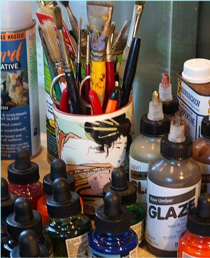

artists

Patricia Wallace Jones
C. Albert
poets
past issues
submissions
editors
home
Patricia Wallace Jones created the images on the Home Page of
The Shit Creek Review
(
The Colours of Cornwall
©) and the front page of Issue One (
Contralto ©
), and generously supplied much of the artwork and encouragement, as well as advising on the overall look of the
Review
. More of her work can be seen at
http://imagineii.typepad.com/imagineii/
.
Distractions
© Patricia Wallace Jones
C. Albert is a collage artist and poet who lives in Seattle, Washington and exhibits in Seattle as well as nationally. Her intimate collages combine fragments from magazines with words and varied mixed media. Blogsite:
www.runawaymoon.blogspot.com
.